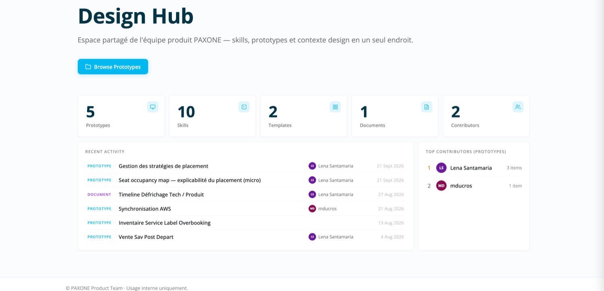
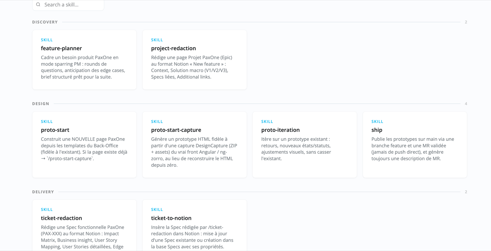
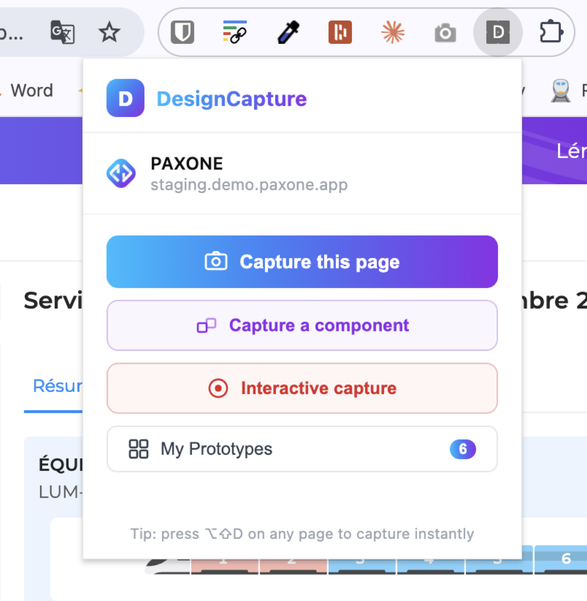
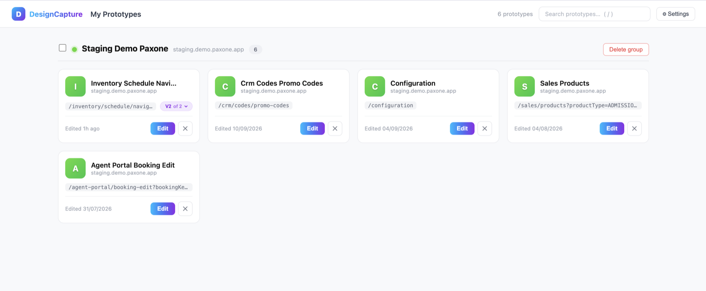
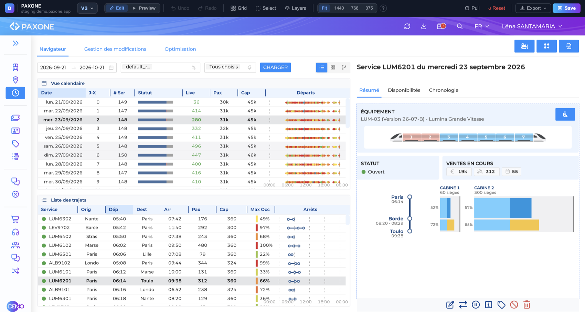
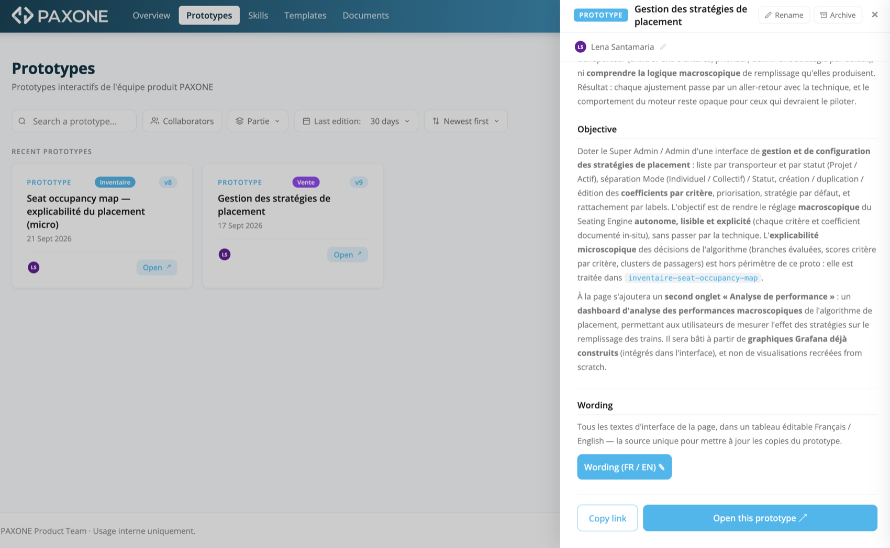
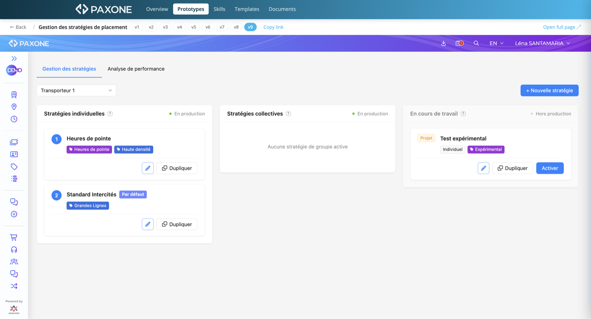
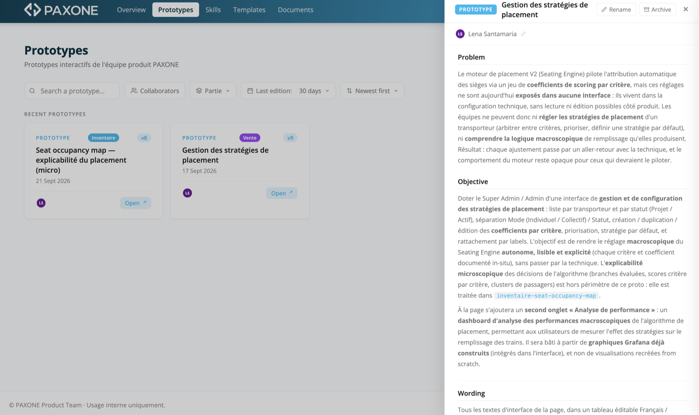
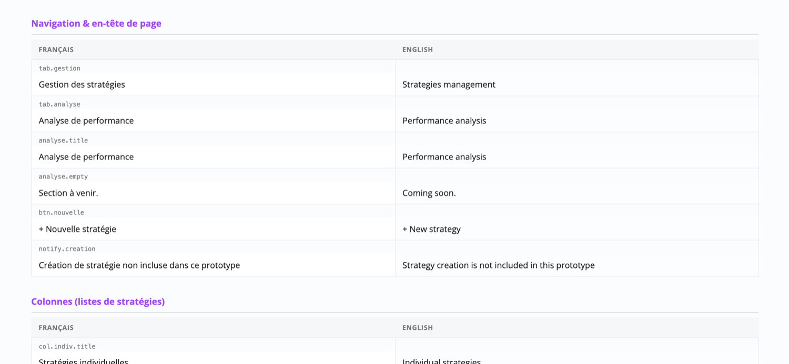

Je n’ai pas utilisé l’IA pour écrire des specs plus vite.
J’ai construit un produit pour mon équipe produit, et je l’ai livré comme un produit.
Je suis PM chez Wiremind pour le produit PAXONE, un produit B2B d’inventaire et de réservation tout-en-un pour les opérateurs ferroviaires et routiers.
Je suis la seule PM dans une équipe de 15 personnes dont 11 developpeurs, une PO, un QA et un Product Expert. Un Product Expert est au contact quotidien de nos clients : implémentation, support, formation, récolte de besoins.
Comment je travaille avec lui
Je vais chercher les besoins et je m’appuie sur ce lien avec le Product Expert pour aller au contact des utilisateurs. Nous menons les interviews ensemble : il apporte le contexte du compte, j’apporte ce que le produit peut faire. Ce qui en ressort comme décision produit me revient.
Puis toute la chaîne
Framing du besoin en solution, design et prototype de l’interface, rédaction de la spec et découpage en user stories, priorisation, roadmap et documentation de la release. De la première question client à la release note, je suis sur toute la chaîne.
La colonne de droite, c’est ce que chaque étape me coûtait. Les étapes 02 et 03 occupent l’essentiel de cette réponse.
Contexte
Les besoins clients nous arrivent sous deux formes inexploitables : des appels d’offres qui font des centaines de pages d’exigences, et les interviews utilisateurs que le Product Expert et moi menons ensemble, où le vrai besoin est noyé dans une heure de conversation. Les deux demandent des jours à traiter, et les deux finissent survolés faute de temps.
Approche
J’interroge directement le corpus d’appels d’offres au lieu de le lire linéairement, et je fais synthétiser nos conversations d’interview pour en extraire le besoin derrière la demande, le tout avec Gemini car les ressources sont des fichiers Google. J’en tire un besoin formulé, avec ses zones d’ombre, que je peux challenger et confronter au produit.
Impact
Nous arrivons au framing en sachant déjà ce que les clients ont demandé, à quelle fréquence, et avec quels mots. Le travail passe de l’extraction à l’interprétation.
Contexte
Cadrer une feature sur un système mature, c’est prédire comment elle va entrer en collision avec tout ce qui existe déjà. Le problème : on oublie des edge cases
Cela impacte la qualité du produit et notre temps : un edge case oublié ressort, au mieux, en développement, au moment où ajouter du travail n’est pas toujours possible.
Approche
Je clone le repository en local et j’utilise Claude Code, l’assistant IA avec lequel je travaille, pour interroger directement la codebase. Pour la base de données et les logs, je passe par le serveur MCP que notre CTO a construit : ce n’est pas moi qui l’ai construit, mais je m’en sers en permanence. L’un comme l’autre répondent sur ce que le produit fait aujourd’hui, pas sur ce que la documentation prétend, et je n’ai plus besoin de deviner ni de mobiliser un développeur pour le savoir.
Puis, au moment d’élaborer la solution, j’utilise un skill que j’ai écrit pour me challenger : il m’interroge plutôt que l’inverse, pose ses questions par rounds, nomme les edge cases que je n’ai pas mentionnés, et challenge le scope.
Le skill lui-même
Je l’ai écrit comme un document, pas comme un prompt : un rôle, un comportement attendu, un déroulé, et ce qu’il doit refuser de faire. Le vocabulaire est celui de notre produit ; ce qui compte ici, c’est la structure.
# feature-planner Cadrer un besoin produit PAXONE en posant les bonnes questions avant de rédiger une Spec ou un prototype. ## Rôle Sparring partner PM : explorer et structurer un besoin avant qu'il devienne une Spec (PAX-XXX) ou un Projet. Ne pas rédiger de spec : poser des questions, anticiper les angles morts, challenger la scope. ## Comportement - En français, style direct - Questions par rounds de 2-3, attendre les réponses - Formuler des hypothèses, signaler les edge cases non mentionnés ## Déroulé 1. Problème problème utilisateur concret, personas (chef de produit, agent supervision, gestionnaire d'incident, EF...), origine (GITE / terrain / OSDM) 2. Périmètre interfaces (Inventaire / Portail Agent / OSDM API / Onboard), modules impactés, impact sur bookings / fulfillment / reacom, hors scope 3. Cas d'usage nominal, alternatifs, edge cases (statuts PROCESSING / INCONSISTENT / ON-HOLD, permissions par rôle, volumes, collectif / multi-segment / A-R, perturbations) 4. Contraintes OSDM, intégrations (RailCube / CAYZN / PSP), spécificités client, décisions ouvertes, risques ## Sortie Un brief de cadrage structuré (problème, personas, interfaces / modules, cas d'usage, edge cases, risques, hors scope, décisions ouvertes), puis proposer /ticket-redaction ou /proto-start.
Impact
J’arrive au framing avec le comportement réel du système sous les yeux, et j’en ressors avec les edge cases nommés. Moins de surprises atteignent le développement, et j’arrête de consommer l’attention d’un développeur pour des questions auxquelles je peux répondre seule.
Contexte
Mon équipe n’a jamais eu de designer, donc je fais le design en plus du travail produit. J’ai commencé sur Figma, et j’intégrais les écrans directement dans les specs sur Notion.
Ce que je produisais, c’étaient des écrans, pas des prototypes. Chaque itération était assez lente pour designer les cas importants et la bibliothèque de composants n’était jamais tout à fait à jour.
C’est ça qui coûtait vraiment. Un écran qui ne montre que le cas nominal cache exactement l’endroit où le produit est difficile. On le relit, on le valide, et les questions qu’il n’a jamais soulevées reviennent plus tard, quand y répondre coûte cher.
Approche
J’ai construit un Design Hub : un repo interne partagé où sont stockés tous les prototypes avec Claude et les skills produit. Il se régénère depuis le repo à chaque publication, et se consulte sans rien installer.


Les skills ont été partiellement crée avec ma coéquipière PO afin d'en créer propres à nos process de mon équipe, en s'inspirant des skills des autres équipes. On s'est accordés pour suivre un enchainement de skills : du cadrage du besoin à la publication du prototype.
Des écrans statiques, faits manuellement.
Très longs à produire.
Des prototypes interactifs, sur la base des composants actuels du produit.
Des itérations bien plus efficaces, pour designer chaque état et chaque cas. Donc plus de qualité dans la spécification.
Un outil interne, construit par une autre équipe chez Wiremind, exporte n’importe quel écran réel en HTML. Mon prototype part du produit tel qu’il est, et je n’édite que la partie que la feature touche. Je ne maintiens plus un design system en parallèle.
L’extension DesignCapture exporte l’écran réel en HTML, avec ses polices, ses icônes et ses images. C’est le point de départ : je ne redessine rien à la main.



proto-start-captureLe skill va modifier le fichier HTLM généré par la capture dans la v1 du prototype. J’itère ensuite en local, version après version, jusqu’à ce que le prototype soit sec.
# proto-start-capture Génère un prototype HTML fidèle à partir d'une capture du vrai front, au lieu de reconstruire le HTML depuis zéro. ## Ce que l'utilisateur fournit 1. Naviguer soi-même jusqu'à la page réelle 2. Extension DesignCapture, export au format ZIP 3. Donner le chemin local du fichier téléchargé Claude ne navigue jamais lui-même : tout part du fichier fourni. Sans chemin, le skill s'arrête. Il ne devine jamais un chemin ni ne suppose qu'un fichier existe. ## Le traitement de la capture Le contenu capturé est redirigé tel quel vers sa destination finale. Jamais réécrit : une réécriture reconstruit le fichier de mémoire et introduit des dérives silencieuses (CSS réordonné, attributs perdus), alors que la fidélité à la capture est toute la raison d'être de cette commande. ## Le versionnage Un proto commence toujours à v1. Si v1 existe déjà, le skill s'arrête et renvoie vers /proto-iteration. Les versions précédentes ne sont jamais écrasées. ## Ce qui est modifié Uniquement les sections concernées par la feature, chirurgicalement. Tout le reste de la page reste identique : c'est l'intérêt de partir d'une capture.
shipQuand c’est prêt, ship publie. Il crée la branche, rédige la description de la merge request (contexte, solution, changements, lien du prototype) et complète le fichier de contexte s’il manque. Je merge ensuite la MR sur Git.
Impact
Le gain n’est pas d’abord la vitesse. C’est jusqu’où je peux désormais descendre dans le détail fonctionnel : états vides, erreurs, permissions, variantes pénibles. Les cas qui restaient dans ma tête, ou qui restaient inconnus, sont maintenant à l’écran, là où l’équipe peut les contester.
Contexte
Ce qui en a fait quelque chose que mon équipe utilise, c’est que chaque prototype porte son propre raisonnement et son propre historique.
Approche


Impact
Les questions produit se tranchent en regardant quelque chose plutôt qu’en le décrivant. Les développeurs reçoivent l’intention sous forme d’artefact, avec son raisonnement attaché, plutôt qu’un lien et une conversation.
Et je ne suis plus le point de défaillance unique de la production d’interface. La PO reprend les skills, les améliore, et livre aussi ses propres prototypes.

Contexte
La copy/wording d’interface est l'objet le plus systématiquement perdu du travail produit. Elle vit dans des annotations de maquette, des commentaires de relecture de spec et des messages de chat, puis elle est retapée à la main, en deux langues, par quelqu’un qui n'a pas su trouver la source de vérité.
Approche
J’ai fait générer au prototype un tableau d’édition bilingue : chaque morceau de copy qu’il contient, français et anglais côte à côte, éditable sur place, avec une clé stable par ligne et un export JSON. Un objet, trois usages. Je réécris la copy, le prototype est mis à jour depuis ce tableau, et la spec embarque l’export pour que les développeurs implémentent le wording final dans les deux langues.
Sa limite: honnêtement
Les clés pointent vers le prototype, pas vers notre codebase de production. Les développeurs transposent toujours le texte eux-mêmes.

Contexte
En phase de défrichage, avec le tech owner de la spec, on fait des allers-retours pour entrer dans le détail ensemble : ce que la solution implique vraiment, où elle touche le système existant, ce qui reste à décider.
Le plus long n’est pas de s’accorder sur la solution. C’est d’écrire les user stories dans le détail.
Approche
Une fois le prototype figé, Claude écrit les user stories détaillées à partir de celui-ci. Il va plus vite que moi, et descend plus loin dans le détail. Chaque story alimente ensuite un ticket.
Impact
J’arrive au sprint planning avec un backlog découpé, les critères d’acceptation déjà écrits. À partir de là, le tech owner crée les tickets et organise le sprint planning avec l’équipe.
Contexte
La documentation utilisateur, les release notes et la traduction arrivent toujours quand le sprint est déjà fini. C’est donc la première chose qu’on repousse. Et le jour où un client ne trouve pas comment une fonctionnalité marche, plus personne dans l’équipe n’en a le détail en tête.
Approche
Documentation utilisateur rédigée à partir de la spec qui existe déjà, pareil pour la release notes, et traduction entre français et anglais. Je relis et corrige tout : le brouillon n’est jamais le livrable.
Impact
Cette partie n’est plus négociable face au reste du sprint. Elle est faite, à temps, et je passe mon attention à la vérifier plutôt qu’à la produire.
Tout jugement produit : ce qui est dans le scope, ce qui en est délibérément exclu, quel edge case compte, ce qu’un prototype doit afficher. Écrire les énoncés de problème. Approuver les merge request du design hub.
Produire et éditer les prototypes. Générer le tableau de traduction. Rédiger documentation, release notes et traductions. Interroger la codebase et les documents d’appels d’offres.
Où vit un prototype et comment il se nomme. Qu’une version n’est jamais écrasée. Que rien n’arrive sur la branche principale sans relecture. Ce ne sont pas des automatisations. Ce sont des décisions produit prises une fois pour que personne n’ait à les reprendre.
À rédiger. C’est la section qui pèse le plus lourd pour un lecteur senior : c’est là qu’il vérifie si tu as du recul. Pistes :
À rédiger après la section précédente. Probablement : un récapitulatif consolidé de l’impact, puis ce que cette façon de travailler transfère à une autre équipe produit, la partie qui parle directement à Alan.